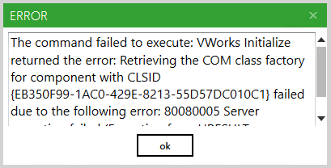
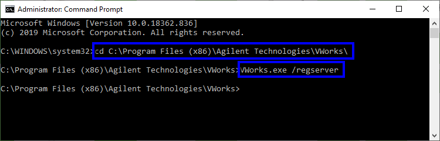
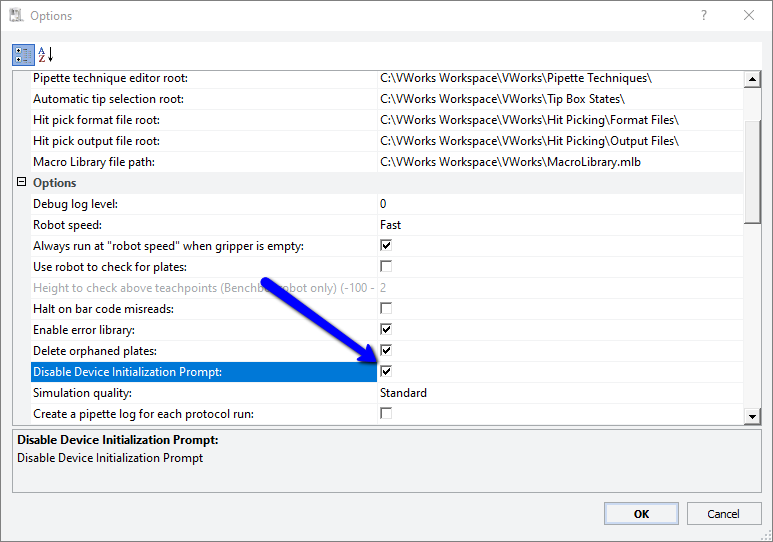

Agilent Bravo 2018
Driver User Guide
Version 4.5.5
Introduction:
The Agilent Bravo 2018 driver provides an interface to the Agilent Bravo and VPrep for Green Button Go.
Minimum supported version of Green Button Go: 3.3.6634.15281
Installing the Driver:
For automated installation, use the 'Update' feature from within Green Button Go in the 'About' window.
To manually install the driver, copy the following file(s) to the 'C:\Program Files (x86)\Green Button Go\Drivers' folder:
Agilent.Bravo2018.Driver.dll
BioSero.GreenButtonGo.LiquidHandler.dll
Interop.VWorks4Lib.dll
VWorks4Lib.dll
Omit the '(x86)' in the destination folder on 32-bit operating systems. If the file was downloaded from the Internet, it may be necessary to unblock the file. First copy it to a location where you have write privileges (such as the Desktop or My Documents folder), then right click on the dll, select Properties and click or uncheck the 'Unblock' button if it exists.
Connection:
The Bravo must be connected to the computer running Green Button Go (or the Green Button Go Remote Client) which needs to run As Administrator.
Required Hardware:
Agilent Bravo or VPrep.
Required Software:
VWorks 4 with remote license.
Setup:
If you get a 'Retrieving the COM class factory for component' error when trying to run the 'Initialize' command, you need to register VWorks.exe.

To register it, run Command Prompt 'As Administrator'. Navigate to the VWorks folder ('cd C:\Program Files (x86)\Agilent Technologies\VWorks') then register the file using 'VWorks.exe /regserver'.

In VWorks, you need to 'Disable Device Initialization Prompt'.

Instrument Properties:
- User Name: VWorks user name to use to log into VWorks. If no users have been setup, use the "administrator" user name with "administrator" password.
- Password: Password for User Name.
- Default Device File: Optional. Will be used to load VWorks Device File for Show Dialog command.
- Error on User Message: If true, GBG will subscribe to VWorks User Message events. This will treat VWorks User Message events like errors so that GBG user will be notified that VWorks requires user interaction. Note, if VWorks is in simulation mode, user messages may not be displayed in VWorks, even though the event is triggered.
Processes:
- Run Sequence
- Default: Executes the process.
- Parameters
- Sequence Name - The name of the sequence with which this process is associated.
Commands:
- Initialize
- Show VWorks: Show or Hide VWorks.
- Input Parameters
- Make VWorks Visible - If true, makes VWorks visible. If false, hides VWorks.
- Kill VWorks: Kills all processes that are called VWorks. Only use this if there are is an instance of VWorks that stays alive after closing GBG.
- Show Dialog: Shows VWorks Diagnostics window.
- Run Runset: Runs a VWorks runset (.rst file extension).
- Input Parameters
- Runset - The file name and path of the runset.
- Timeout (min.) - Time in minutes to allow the runset to run before throwing a timeout error.
- Close Protocol: Close the specified VWorks protocol file.
- Input Parameters
- Protocol - The protocol path and file name to close (.pro file extension).
- Load Device File: Load the specified VWorks device file.
- Input Parameters
- Device File - The path and file name of the device file to load (.dev file extension).
- Get Move Parameters: Used by the Run Sequence process to determine the next movement in a sequence and output the data required to execute it.
- Input Parameters
- Sequence Name - The name of the liquid handler Sequence defined in the sequence editor that is being run.
- Output Parameters
- Arm Sequence - The name of the arm sequence defined in the Teach Pendant that the arm should execute in order to move the appropriate plate.
- Nest Variable Name - Identifies which 'Plate On' variable the barcode will be put into or pulled from.
- Run Sequence Activities: Used by the Run Sequence process to execute all non-movement steps defined in the sequence previous to the next plate movement.
- Input Parameters
- Sequence Name - The name of the liquid handler Sequence defined in the sequence editor that is being run.
- Load Protocol: Loads the specified protocol.
- Input Parameters
- Protocol Name - The protocol to run.
- Timeout (min) - Time in minutes to allow the protocol to load before throwing a timeout error.
- Run Protocol: Runs the protocol that was set using the Load Protocol command.
- Input Parameters
- Timeout (min) - Time in minutes to allow the protocol to run before throwing a timeout error.
- Load and Run Protocol: Loads and runs the specified protocol.
- Input Parameters
- Protocol Name - The protocol to run.
- Timeout (min) - Time in minutes to allow the protocol to run before throwing a timeout error.
For additional information, please contact your local Biosero representative or the Biosero office:
Biosero
9560 Waples St
San Diego, CA 92121
Online Service Requests: www.biosero.com/servicerequest/
Email: service@biosero.com
Call Us: 858-880-7376